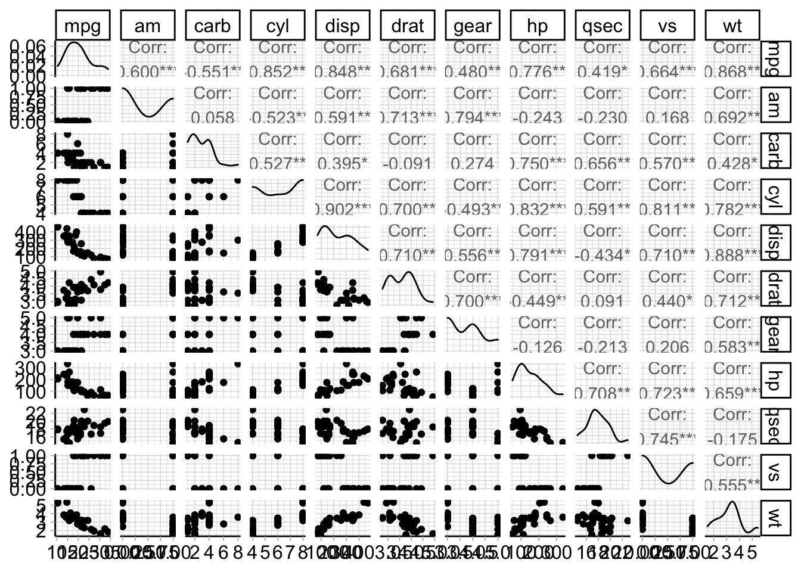

mlr3
1 TASKS
1.1 导入数据
data("mtcars", package = "datasets")
mtcars %>% head() %>% knitr::kable()| mpg | cyl | disp | hp | drat | wt | qsec | vs | am | gear | carb | |
|---|---|---|---|---|---|---|---|---|---|---|---|
| Mazda RX4 | 21.0 | 6 | 160 | 110 | 3.90 | 2.620 | 16.46 | 0 | 1 | 4 | 4 |
| Mazda RX4 Wag | 21.0 | 6 | 160 | 110 | 3.90 | 2.875 | 17.02 | 0 | 1 | 4 | 4 |
| Datsun 710 | 22.8 | 4 | 108 | 93 | 3.85 | 2.320 | 18.61 | 1 | 1 | 4 | 1 |
| Hornet 4 Drive | 21.4 | 6 | 258 | 110 | 3.08 | 3.215 | 19.44 | 1 | 0 | 3 | 1 |
| Hornet Sportabout | 18.7 | 8 | 360 | 175 | 3.15 | 3.440 | 17.02 | 0 | 0 | 3 | 2 |
| Valiant | 18.1 | 6 | 225 | 105 | 2.76 | 3.460 | 20.22 | 1 | 0 | 3 | 1 |
1.2 建立TASK
library("mlr3")
task_mtcars = as_task_regr(mtcars, target = "mpg", id = "cars")
print(task_mtcars)<TaskRegr:cars> (32 x 11)
* Target: mpg
* Properties: -
* Features (10):
- dbl (10): am, carb, cyl, disp, drat, gear, hp, qsec, vs, wt1.3 快速绘图
library("mlr3viz")
autoplot(task_mtcars, type = "pairs")Registered S3 method overwritten by 'GGally':
method from
+.gg ggplot2
1.4 Task API
1.4.1 数据的基本信息
TASK中数据的行数与列数
task_mtcars$nrow[1] 32task_mtcars$ncol[1] 11task_mtcars$feature_names [1] "am" "carb" "cyl" "disp" "drat" "gear" "hp" "qsec" "vs" "wt" task_mtcars$target_names[1] "mpg"1.4.2 对TASK中数据的修改
数据规模缩小
task_mtcars$select(c("am", "carb", "wt")) # 只能选feature
task_mtcars$filter(2:4) # 仅支持输入row id
task_mtcars$data() %>% knitr::kable()| mpg | am | carb | wt |
|---|---|---|---|
| 21.0 | 1 | 4 | 2.875 |
| 22.8 | 1 | 1 | 2.320 |
| 21.4 | 0 | 1 | 3.215 |
数据规模扩大
task_mtcars$rbind(
data.frame(mpg=1, am=1, carb=1, wt=1)
# df必须和原始数据格式一样， 必须有所有的变量
)
task_mtcars$data() %>% knitr::kable()| mpg | am | carb | wt |
|---|---|---|---|
| 21.0 | 1 | 4 | 2.875 |
| 22.8 | 1 | 1 | 2.320 |
| 21.4 | 0 | 1 | 3.215 |
| 1.0 | 1 | 1 | 1.000 |
2 Learner
learner = lrn("classif.rpart")
learner<LearnerClassifRpart:classif.rpart>: Classification Tree
* Model: -
* Parameters: xval=0
* Packages: mlr3, rpart
* Predict Types: [response], prob
* Feature Types: logical, integer, numeric, factor, ordered
* Properties: importance, missings, multiclass, selected_features,
twoclass, weights2.1 Learner参数
learner$param_set<ParamSet>
id class lower upper nlevels
<char> <char> <num> <num> <num>
1: cp ParamDbl 0 1 Inf
2: keep_model ParamLgl NA NA 2
3: maxcompete ParamInt 0 Inf Inf
4: maxdepth ParamInt 1 30 30
5: maxsurrogate ParamInt 0 Inf Inf
6: minbucket ParamInt 1 Inf Inf
7: minsplit ParamInt 1 Inf Inf
8: surrogatestyle ParamInt 0 1 2
9: usesurrogate ParamInt 0 2 3
10: xval ParamInt 0 Inf Inf
default
<list>
1: 0.01
2: FALSE
3: 4
4: 30
5: 5
6: <NoDefault>\n Public:\n clone: function (deep = FALSE) \n initialize: function ()
7: 20
8: 0
9: 2
10: 10
value
<list>
1:
2:
3:
4:
5:
6:
7:
8:
9:
10: 0直接在初始化时设定参数
learner = lrn("classif.rpart", id = "rp", cp = 0.001)
learner$id[1] "rp"3 训练和预测
task = tsk("pima")
learner = lrn("classif.rpart")
task$data() %>% head() %>% knitr::kable()| diabetes | age | glucose | insulin | mass | pedigree | pregnant | pressure | triceps |
|---|---|---|---|---|---|---|---|---|
| pos | 50 | 148 | NA | 33.6 | 0.627 | 6 | 72 | 35 |
| neg | 31 | 85 | NA | 26.6 | 0.351 | 1 | 66 | 29 |
| pos | 32 | 183 | NA | 23.3 | 0.672 | 8 | 64 | NA |
| neg | 21 | 89 | 94 | 28.1 | 0.167 | 1 | 66 | 23 |
| pos | 33 | 137 | 168 | 43.1 | 2.288 | 0 | 40 | 35 |
| neg | 30 | 116 | NA | 25.6 | 0.201 | 5 | 74 | NA |
3.1 训练
训练的模型保存在learner$model中
learner$modelNULL训练模型
learner$train(task)
learner$modeln= 768
node), split, n, loss, yval, (yprob)
* denotes terminal node
1) root 768 268 neg (0.34895833 0.65104167)
2) glucose>=127.5 283 109 pos (0.61484099 0.38515901)
4) mass>=29.95 208 58 pos (0.72115385 0.27884615)
8) glucose>=157.5 92 12 pos (0.86956522 0.13043478) *
9) glucose< 157.5 116 46 pos (0.60344828 0.39655172)
18) age>=30.5 66 19 pos (0.71212121 0.28787879) *
19) age< 30.5 50 23 neg (0.46000000 0.54000000)
38) pressure< 73 21 8 pos (0.61904762 0.38095238) *
39) pressure>=73 29 10 neg (0.34482759 0.65517241)
78) mass>=41.8 9 3 pos (0.66666667 0.33333333) *
79) mass< 41.8 20 4 neg (0.20000000 0.80000000) *
5) mass< 29.95 75 24 neg (0.32000000 0.68000000) *
3) glucose< 127.5 485 94 neg (0.19381443 0.80618557)
6) age>=28.5 214 71 neg (0.33177570 0.66822430)
12) insulin>=142.5 56 26 neg (0.46428571 0.53571429)
24) age< 56.5 41 16 pos (0.60975610 0.39024390) *
25) age>=56.5 15 1 neg (0.06666667 0.93333333) *
13) insulin< 142.5 158 45 neg (0.28481013 0.71518987)
26) glucose>=99.5 102 41 neg (0.40196078 0.59803922)
52) mass>=26.35 84 41 neg (0.48809524 0.51190476)
104) pedigree>=0.2045 65 27 pos (0.58461538 0.41538462)
208) pregnant>=5.5 32 8 pos (0.75000000 0.25000000) *
209) pregnant< 5.5 33 14 neg (0.42424242 0.57575758)
418) age>=34.5 19 7 pos (0.63157895 0.36842105) *
419) age< 34.5 14 2 neg (0.14285714 0.85714286) *
105) pedigree< 0.2045 19 3 neg (0.15789474 0.84210526) *
53) mass< 26.35 18 0 neg (0.00000000 1.00000000) *
27) glucose< 99.5 56 4 neg (0.07142857 0.92857143) *
7) age< 28.5 271 23 neg (0.08487085 0.91512915) *3.2 预测
prediction = learner$predict_newdata(task$data())
as.data.table(prediction) %>% head() %>% knitr::kable()| row_ids | truth | response |
|---|---|---|
| 1 | pos | pos |
| 2 | neg | neg |
| 3 | pos | neg |
| 4 | neg | neg |
| 5 | pos | pos |
| 6 | neg | neg |
3.3 测试集训练集
set.seed(7)
train_set = sample(task$row_ids, 0.67 * task$nrow)
test_set = setdiff(task$row_ids, train_set)
# train on the training set
learner$train(task, row_ids = train_set)
# predict on the test set
prediction = learner$predict(task, row_ids = test_set)
# the prediction naturally knows about the "truth" from the task
prediction<PredictionClassif> for 254 observations:
row_ids truth response
8 neg neg
12 pos pos
19 neg neg
---
762 pos pos
765 neg neg
768 neg neg3.4 训练效果评估
所有的评估方法
mlr_measures<DictionaryMeasure> with 62 stored values
Keys: aic, bic, classif.acc, classif.auc, classif.bacc, classif.bbrier,
classif.ce, classif.costs, classif.dor, classif.fbeta, classif.fdr,
classif.fn, classif.fnr, classif.fomr, classif.fp, classif.fpr,
classif.logloss, classif.mauc_au1p, classif.mauc_au1u,
classif.mauc_aunp, classif.mauc_aunu, classif.mbrier, classif.mcc,
classif.npv, classif.ppv, classif.prauc, classif.precision,
classif.recall, classif.sensitivity, classif.specificity, classif.tn,
classif.tnr, classif.tp, classif.tpr, debug, oob_error, regr.bias,
regr.ktau, regr.mae, regr.mape, regr.maxae, regr.medae, regr.medse,
regr.mse, regr.msle, regr.pbias, regr.rae, regr.rmse, regr.rmsle,
regr.rrse, regr.rse, regr.rsq, regr.sae, regr.smape, regr.srho,
regr.sse, selected_features, sim.jaccard, sim.phi, time_both,
time_predict, time_train设定评估角度为acc
measure = msr("classif.acc")
measure<MeasureClassifSimple:classif.acc>: Classification Accuracy
* Packages: mlr3, mlr3measures
* Range: [0, 1]
* Minimize: FALSE
* Average: macro
* Parameters: list()
* Properties: -
* Predict type: responseprediction$score(measure)classif.acc
0.7244094 设置多个评估标准
measures = msrs(c("classif.tpr", "classif.tnr"))
prediction$score(measures)classif.tpr classif.tnr
0.4639175 0.8853503 4 调参
4.1 ROC曲线和阈值
task = tsk("sonar")
learner = lrn("classif.rpart", predict_type = "prob")
task<TaskClassif:sonar> (208 x 61): Sonar: Mines vs. Rocks
* Target: Class
* Properties: twoclass
* Features (60):
- dbl (60): V1, V10, V11, V12, V13, V14, V15, V16, V17, V18, V19, V2,
V20, V21, V22, V23, V24, V25, V26, V27, V28, V29, V3, V30, V31,
V32, V33, V34, V35, V36, V37, V38, V39, V4, V40, V41, V42, V43,
V44, V45, V46, V47, V48, V49, V5, V50, V51, V52, V53, V54, V55,
V56, V57, V58, V59, V6, V60, V7, V8, V94.1.1 划分训练集测试集
# split into training and test
splits = partition(task, ratio = 0.8)
str(splits)List of 2
$ train: int [1:167] 3 4 6 7 8 9 11 12 13 14 ...
$ test : int [1:41] 1 2 5 10 16 29 30 32 37 38 ...链式训练
pred = learner$train(task, splits$train)$predict(task, splits$test)
pred$confusion truth
response M R
M 20 9
R 2 104.2 Resampling
task = tsk("penguins")
learner = lrn("classif.rpart")Resample Method列表
as.data.table(mlr_resamplings)Key: <key>
key label params iters
<char> <char> <list> <int>
1: bootstrap Bootstrap ratio,repeats 30
2: custom Custom Splits NA
3: custom_cv Custom Split Cross-Validation NA
4: cv Cross-Validation folds 10
5: holdout Holdout ratio 1
6: insample Insample Resampling 1
7: loo Leave-One-Out NA
8: repeated_cv Repeated Cross-Validation folds,repeats 100
9: subsampling Subsampling ratio,repeats 304.2.1 初始化
resampling = rsmp("holdout")
print(resampling)<ResamplingHoldout>: Holdout
* Iterations: 1
* Instantiated: FALSE
* Parameters: ratio=0.6667两种方法设置holdout比例
resampling$param_set$values = list(ratio = 0.8)
resampling = rsmp("holdout", ratio=0.8)
resampling$param_set$values$ratio[1] 0.84.2.2 应用method
resampling$instantiate(task)
train = resampling$train_set(1)
test = resampling$test_set(1)
str(train) int [1:275] 1 3 4 5 6 7 8 9 10 11 ...4.2.3 执行
task = tsk("penguins")
learner = lrn("classif.rpart", maxdepth = 3, predict_type = "prob")
resampling = rsmp("cv", folds = 3)
rr = resample(task, learner, resampling, store_models = TRUE)INFO [16:33:06.730] [mlr3] Applying learner 'classif.rpart' on task 'penguins' (iter 1/3)
INFO [16:33:06.755] [mlr3] Applying learner 'classif.rpart' on task 'penguins' (iter 2/3)
INFO [16:33:06.766] [mlr3] Applying learner 'classif.rpart' on task 'penguins' (iter 3/3)print(rr)<ResampleResult> of 3 iterations
* Task: penguins
* Learner: classif.rpart
* Warnings: 0 in 0 iterations
* Errors: 0 in 0 iterations效果评估，所有fold中scroe的均值
rr$aggregate(msr("classif.ce"))classif.ce
0.06399695 获取每个模型训练的结果
lrn = rr$learners[[1]]
lrn$modeln= 229
node), split, n, loss, yval, (yprob)
* denotes terminal node
1) root 229 132 Adelie (0.423580786 0.196506550 0.379912664)
2) flipper_length< 206.5 138 43 Adelie (0.688405797 0.304347826 0.007246377)
4) bill_length< 42.35 89 0 Adelie (1.000000000 0.000000000 0.000000000) *
5) bill_length>=42.35 49 7 Chinstrap (0.122448980 0.857142857 0.020408163) *
3) flipper_length>=206.5 91 5 Gentoo (0.021978022 0.032967033 0.945054945) *获取在验证集上训练的结果
rr$prediction() %>%
as.data.table() %>%
arrange(row_ids) %>%
head() %>%
knitr::kable()| row_ids | truth | response | prob.Adelie | prob.Chinstrap | prob.Gentoo |
|---|---|---|---|---|---|
| 1 | Adelie | Adelie | 1.0000000 | 0.0000000 | 0 |
| 2 | Adelie | Adelie | 0.9719626 | 0.0280374 | 0 |
| 3 | Adelie | Adelie | 0.9696970 | 0.0303030 | 0 |
| 4 | Adelie | Adelie | 0.9719626 | 0.0280374 | 0 |
| 5 | Adelie | Adelie | 0.9719626 | 0.0280374 | 0 |
| 6 | Adelie | Adelie | 0.9696970 | 0.0303030 | 0 |
4.3 Benchmarking
library("mlr3verse")
design = benchmark_grid(
tasks = tsks(c("spam", "german_credit", "sonar")),
learners = lrns(c("classif.ranger", "classif.rpart", "classif.featureless"),
predict_type = "prob", predict_sets = c("train", "test")),
resamplings = rsmps("cv", folds = 3)
)
as.data.table(design) %>% head() %>% knitr::kable()| task | learner | resampling |
|---|---|---|
| <environment: 0x109eebbd8> | <environment: 0x12c5391b8> | <environment: 0x109f218c8> |
| <environment: 0x109eebbd8> | <environment: 0x10adbb2e0> | <environment: 0x109f218c8> |
| <environment: 0x109eebbd8> | <environment: 0x10a3c3418> | <environment: 0x109f218c8> |
| <environment: 0x10dadfe08> | <environment: 0x12c5391b8> | <environment: 0x109eaec18> |
| <environment: 0x10dadfe08> | <environment: 0x10adbb2e0> | <environment: 0x109eaec18> |
| <environment: 0x10dadfe08> | <environment: 0x10a3c3418> | <environment: 0x109eaec18> |